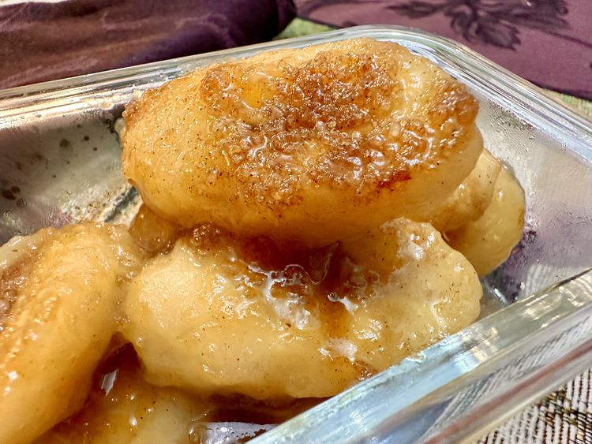

Caramelized Banana
Home

Description
Caramelized bananas are a simple yet delicious dessert that brings out the natural sweetness of ripe bananas. Perfect for topping pancakes, waffles, or enjoying on their own!
Ingredients
- 2 ripe bananas, sliced
- 2 tablespoons unsalted butter
- ¼ cup brown sugar
- 1 teaspoon vanilla extract
- Pinch of salt
- Optional: cinnamon for sprinkling
Steps
- In a skillet, melt the butter over medium heat.
- Add the sliced bananas to the skillet and cook for about 2 minutes, until they start to soften.
- Sprinkle the brown sugar over the bananas and stir gently to coat them evenly.
- Continue cooking for another 2-3 minutes, allowing the sugar to melt and caramelize, stirring occasionally.
- Add the vanilla extract and a pinch of salt, stirring to combine.
- If desired, sprinkle a little cinnamon over the top for extra flavor.
- Remove from heat and serve warm. Enjoy your caramelized bananas on pancakes, waffles, or on their own!